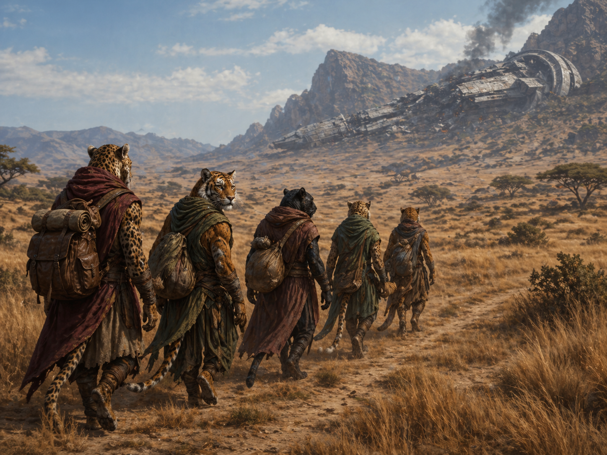
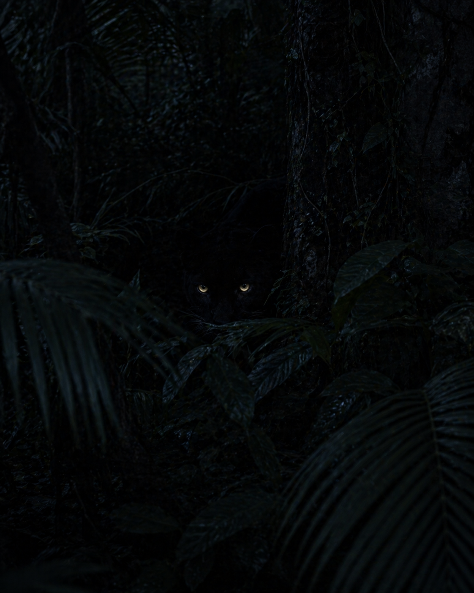
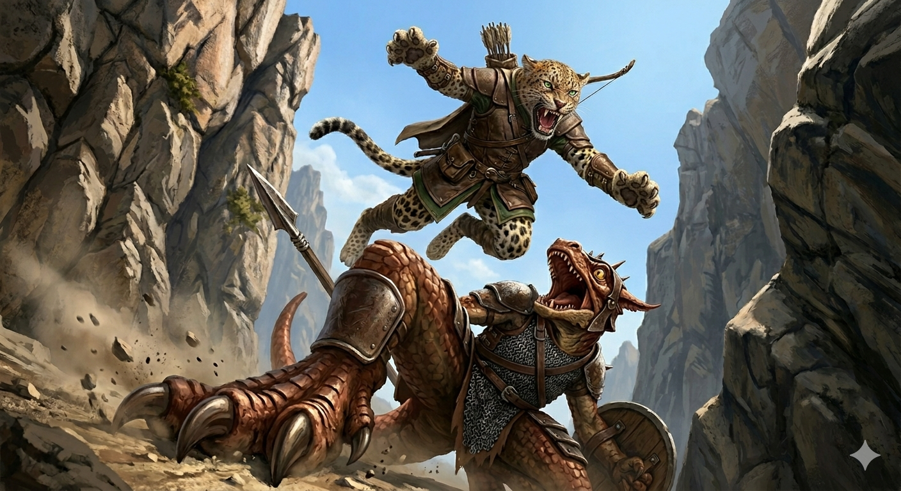
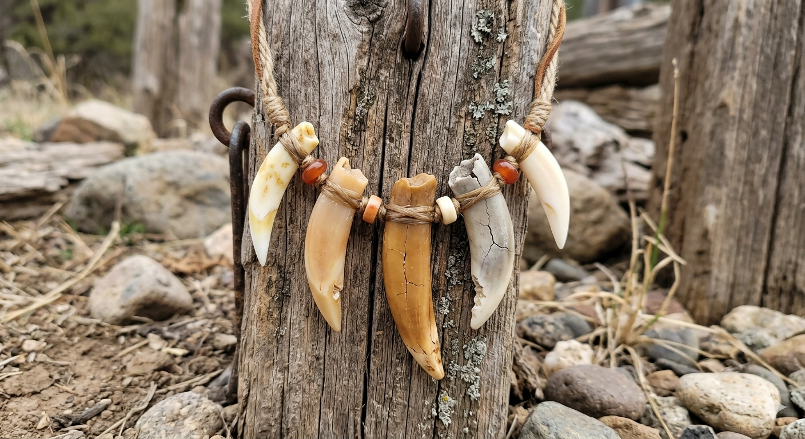
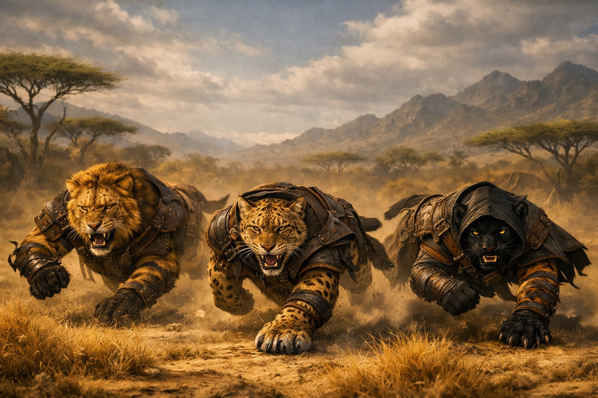
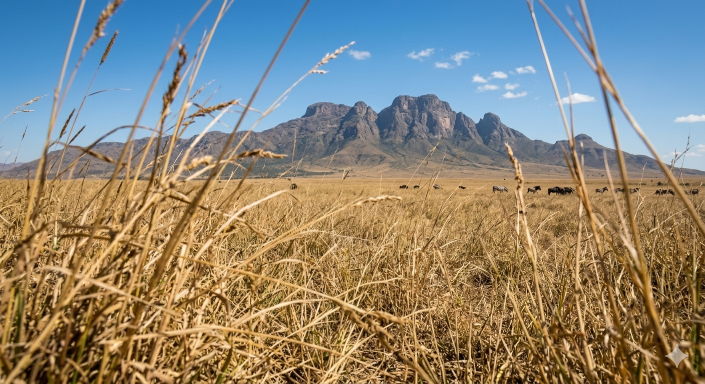
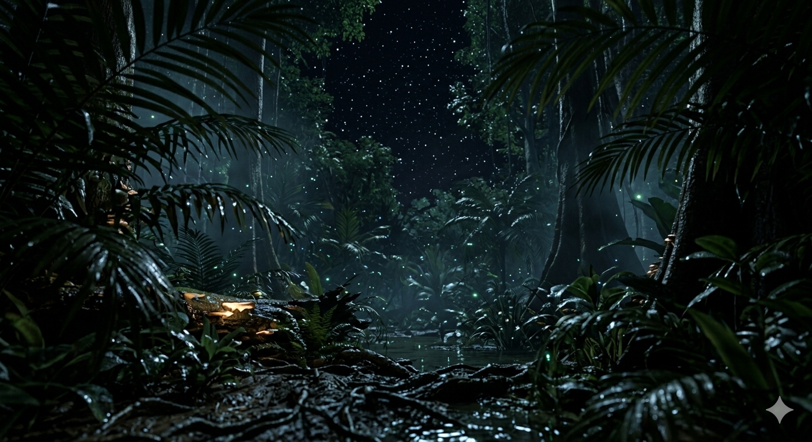

You have chosen Catlans

Origin
The Catlans, known in their native tongue as the Felrathi, are not of Eldora. They come from a distant land where instinct and intellect were never separate, and where many forms of life lived as one. Among them, the Felrathi were known for their heightened awareness, agility, and keen sensitivity to their surroundings. Their arrival in Eldora was sudden and unchosen—marked not by migration, but by ruin. They came scattered and disoriented, with no clear memory of how they arrived, only the shared understanding that something was lost.
In Eldora, they became known as Catlans—outsiders in a world already burdened by unseen forces. Though unfamiliar with its lands, they instinctively sense its instability, feeling fractures in the world long before they can understand them. Cut off from their origin, they form small, scattered communities, adapting to a reality far harsher than their own. Unlike the other races, they are not bound to Eldora’s beginnings, yet they are deeply affected by its condition—quiet observers of a world that is no longer whole.

Culture and Way of Life
Catlan society is shaped by instinct, awareness, and quiet adaptation rather than rigid structure or hierarchy. They do not build vast cities or kingdoms, instead forming small, close-knit communities that blend into their surroundings. Movement, observation, and survival are central to their way of life, with each individual relying on sharpened senses and intuition as much as skill. While they value companionship and trust, they are not bound by strict roles—each Catlan finds their place through ability and experience rather than expectation.
They live lightly upon the land, taking only what is needed and avoiding unnecessary disruption. Their culture places importance on awareness—of their environment, of others, and of subtle changes that often go unnoticed by other races. This makes them cautious, sometimes distant, but rarely unprepared. Though scattered across Eldora, they remain connected through shared instincts and unspoken understanding, carrying with them a quiet resilience shaped not by where they came from, but by how they endure.

Strengths and Weaknesses
Catlans excel in agility, perception, and adaptability, making them naturally adept at navigating unfamiliar and unstable environments. Their heightened senses allow them to detect subtle changes in their surroundings, often noticing threats or opportunities long before others do. Quick reflexes and fluid movement make them difficult to track and even harder to pin down, giving them an advantage in situations that require precision, timing, and awareness. Their independence and flexibility also allow them to adjust quickly to changing circumstances, rarely relying on rigid plans or structures.
However, this same independence can become a weakness. Catlans are less inclined toward large-scale coordination, often favoring individual judgment over collective strategy, which can make unified efforts more difficult to sustain. Their lighter build and reliance on mobility leave them less suited for prolonged direct confrontations, especially against heavily armored or overwhelming forces. Additionally, their heightened sensitivity to their surroundings can become a burden, as constant awareness of subtle disturbances may lead to unease, distraction, or difficulty focusing in chaotic environments.

Beliefs
Catlan beliefs are not bound to rigid doctrine or formal worship, but shaped by instinct, experience, and quiet observation. They do not claim to fully understand the forces at work in the world, yet they trust what they feel—subtle shifts, unseen patterns, and the sense that not all things are as they appear. Rather than seeking control or mastery, they believe in moving with the flow of events, adapting when needed and withdrawing when something feels wrong.
Many Catlans share a common understanding that the world is fractured in ways that cannot always be seen. While they may speak of guiding signs or unseen influences, these are not worshipped as gods, but acknowledged as forces to be respected and navigated. Their belief is not in certainty, but in awareness—trusting that survival and purpose come not from dominance, but from knowing when to act, when to wait, and when to walk away.

Battle Style
Catlans favor speed, precision, and positioning over brute force, relying on movement and awareness to control the flow of a fight. They strike from angles others overlook, using quick bursts of motion to engage and disengage before a counter can form. Rather than meeting force head-on, they create openings through misdirection, feints, and timing—turning an opponent’s momentum against them.
They are most effective in fluid engagements, where terrain and spacing can be used to their advantage. In prolonged or direct confrontations, they avoid standing ground, instead wearing down opponents through repeated, calculated strikes. Whether alone or in small groups, Catlans fight with a rhythm that feels unpredictable to others—less like a formation, and more like a hunt guided by instinct.
Where Does Your Hunt Begin?



Each hunting ground shapes your instincts—defining how you move, adapt, and survive in the wild.
Instincts of the Wild